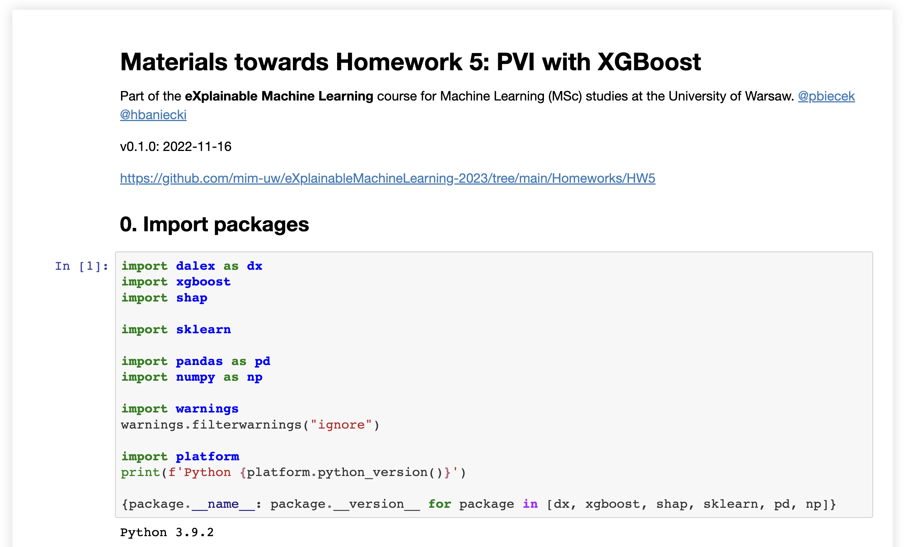

Permutational Variable Importance and Model Class Reliance
eXplainable AI
Przemysław Biecek
Machine Learning @ MIMUW 2022

Paper of the day
All Models are Wrong, but Many are Useful
- Today we will talk about Permutational Variable Importance.
- The idea is quite old. It was used by Breiman, among others, in the construction of random forests.
- But today we will talk about its more general formulation introduced in All Models are Wrong, but Many are Useful: Learning a Variable’s Importance by Studying an Entire Class of Prediction Models Simultaneously by Aaron Fisher, Cynthia Rudin and Francesca Dominici.
,,All Models are Wrong, but Many are Useful’’ in numbers
- The ,,All Models are Wrong, but Many are Useful’’ paper is published on arXiv since 2018
- Now (2022) it has 919 citations which shows an amazing adoption of presented ideas
- The paper refers to interesting but kind of forgotten idea of Rashomon perspectives and leads to the discussion about traceability of important variables if their contributions are not independent.
XAI pyramid
- Thinking about the XAI pyramid -> we return to the second level of the pyramid, level related to variable importance
- We focus on explanations for a single variable but all presented methods may be extended to two or more variables
Rashomon perspective
There are many references to Rashomon’s perspective in the paper. What is it about?
Statistical Modeling: The Two Cultures. 1/2
Leo Beriman’s paper from 20 years ago is an absolute classic today. The article touches on many topics that are more and more relevant from decade to decade.
The main storyline is the difference in approach to data analysis between the two tribes: statistical and algorithmic.
Statistical Modeling: The Two Cultures. 2/2
One of the interesting issues in this paper is the Rashomon perspective. Many models can have very similar performance but very different descriptions of the data.
If we are interested in the importance of variables, why do we get so fixated on analysing just one of these models?
Variable importance
Variable importance for Random Forest
From: https://www.stat.berkeley.edu/~breiman/RandomForests/cc_home.htm#varimp
In every tree grown in the forest, put down the OOB cases and count the number of votes cast for the correct class. Now randomly permute the values of variable m in the OOB cases and put these cases down the tree. Subtract the number of votes for the correct class in the variable-m-permuted OOB data from the number of votes for the correct class in the untouched OOB data. The average of this number over all trees in the forest is the raw importance score for variable m.
If the values of this score from tree to tree are independent, then the standard error can be computed by a standard computation. The correlations of these scores between trees have been computed for a number of data sets and proved to be quite low, therefore we compute standard errors in the classical way, divide the raw score by its standard error to get a z-score, ands assign a significance level to the z-score assuming normality.
For each case, consider all the trees for which it is OOB. Subtract the percentage of votes for the correct class in the variable-m-permuted oob data from the percentage of votes for the correct class in the untouched oob data. This is the local importance score for variable m for this case.
Do we need a new measure for Variable Importance?
Let’s return to ,,All Models are Wrong…’’
From: http://www.jmlr.org/papers/volume20/18-760/18-760.pdf
Several common approaches for variable selection, or for describing relationships between variables, do not necessarily capture a variable’s importance. Null hypothesis testing methods may identify a relationship, but do not describe the relationship’s strength. Similarly, checking whether a variable is included by a sparse model-fitting algorithm, such as the Lasso (Hastie et al., 2009), does not describe the extent to which the variable is relied on. Partial dependence plots (Breiman et al., 2001; Hastie et al., 2009) can be difficult to interpret if multiple variables are of interest, or if the prediction model contains interaction effects .
Another common VI procedure is to run a model-fitting algorithm twice, first on all of the data, and then again after removing X1 from the data set. The losses for the two resulting models are then compared to determine the importance, or “necessity,” of X1 (Gevrey et al., 2003). Because this measure is a function of two prediction models rather than one, it does not measure how much either individual model relies on X1.
Motivation
We need
- Model agnostic procedure for assessment of variable importance
- Assessment of stability/uncertainty beyond the measure of variable importance
- Rashomon perspective -> use many (good) models to understand significance of a selected variable
Model Reliance
Variable importance as the drop in the loss after permutation of variable \(i\).
\[ MR(f) = \frac{E\ Loss\ f\ under\ noise}{E\ Loss\ f\ without\ noise}. \]
Noise should make \(X_i\) uninformative to \(Y\) keeping the marginal distribution of \(X_i\).
Example estimator
\[ \widehat{MR}(f) = \frac{\hat e_{switch}(f)}{\hat e_{orig}(f)}, \]
where
\[ \hat e_{orig}(f) = \frac 1n \sum_{i=1}^n L(f(y_i; X_{1,i};X_{2,i})) \]
and
\[ \hat e_{switch}(f) = \frac 1{n(n-1)} \sum_{i=1}^n \sum_{j\neq i} L(f(y_j; X_{1,i};X_{2,j})). \]
Model Reliance – yet another estimator
One can estimate this ratio in a more computationally efficient way
\[ \hat e_{divide}(f) = \frac 1{2[n/2]} \sum_{i=1}^{[n/2]} L(f(y_i; X_{1,i+[n/2]};X_{2,i})) + L(f(y_{i+[n/2]}; X_{1,i};X_{2,{i+[n/2]}})). \]
But the easiest way is to permute the value of the variable \(x_i\). This preserves the distribution by destroying the dependence on Y.
\[ \hat e_{permute}(f) = \frac 1{n} \sum_{i=1}^{n} L(f(y_i; X_{1,\pi(i)};X_{2,i})), \]
where \(\pi\) is a random permutation over \(\{1, ..., n\}\).
Example: FIFA
Example importance of variables for few selected models: random forest, logistic regression, gradient boosing. Note that importance scores are different between models. Because we have regression task in FIFA data, then here we are using RMSE as a loss function.
From Explanatory Model Analysis.
Model Class Reliance
One model is not enough. Let’s consider \(\varepsilon\)-Rashomon set – set of models with performance \(\varepsilon\)-close to a reference model \(f_{ref}\). More formally:
\[ \mathcal R(\varepsilon, f_{ref}, \mathcal F) = \{f \in \mathcal F: e_{orig}(f) \leq e_{orig}(f_{ref}) + \varepsilon \}. \]
We can now define the importance of a variable not for a single model but for the entire class, we will call it Model Class Reliance
\[ [MCR_-(\varepsilon), MCR_+(\varepsilon)] = \left[ \min_{f\in \mathcal R(\varepsilon)} MR(f); \max_{f\in \mathcal R(\varepsilon)} MR(f) \right]. \]
Rashomon’s perspective: open questions
In the paper Interpretable machine learning: Fundamental principles and 10 grand challenges the main challenges facing XAI techniques are presented. One of them is: 9. Characterization of the ,,Rashomon’’ set of good models.
This is an area of active research, currently mainly focused in linear models and tree models.
Other approaches to Variable importance
Average absolute SHAP
Of course, there are many other ways to determine the importance of variables in a model agnostic way.
We have previously discussed the usefulness of scores based on SHAP values.
\[ vip^{SHAP}_j = \frac 1n \sum_i |\phi^{SHAP}_{i,j}|. \]
Oscillations of Partial Dependence
Similarly, one can construct measures of importance of variables based on partial dependence profiles. These are model agnostic too.

Friedman’s H-Statistic
In a similar way, we can construct importance measures not only for one variable, but for interactions, e.g. of two variables.
We will say that pairwise interactions occur if
\[ E_X \left[ \frac{\partial^2 F(x)}{\partial x_j \partial x_k} \right]^2 > 0. \]
Let’s recall simplified definition of Partial Dependence Profiles for set of variables \(S\) (in the estimation, the expected value is replaced by the mean).
\[ F_S(x_S) = E_{X_{-S}} \left[ F(x_S, x_{-S}) \right]. \]
After the paper Predictive learning via rule ensembles (Jerome Friedman, Bogdan Popescu) we can define H-Statistic for pair of variables \(j\) and \(k\).
\[ H^2_{jk} = \frac{\sum_i [\hat F_{jk} (x_{ij}, x_{ik}) - \hat F_{j} (x_{ij}) - \hat F_{k} (x_{ik}) ]^2}{\sum_i \hat F^2_{jk} (x_{ij}, x_{ik}) }. \]
In similar way we can do this for one or more variables.
Take-home message
- Why would we use only one model to infer the importance of a variable? This is very old-fashioned thinking. We should use the Rashomon perspective instead.
- The idea of permutation importance of variables was presented in the article on random forests by Leo Breiman. But it is transferable to other model classes.
- An interesting alternative is Model Class Reliance. It allows you to capture the importance of a variable not only from the perspective of a single model but of an entire class of models.
- There are many other approaches to assessing the importance of a variable or pairs of variables (interactions). How to assess which are better? This is an interesting problem for research.
- Rashomon is an old film, but why not watch it sometime soon?
Code-examples


eXplainable AI – VIP and MCR – MIM UW – 2022